12 slides estáticos · 12 vivos · 390 px como no celular
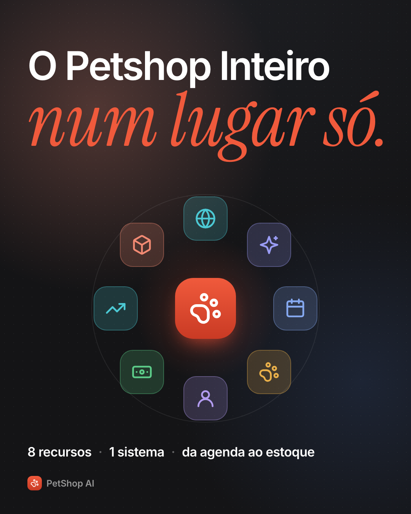
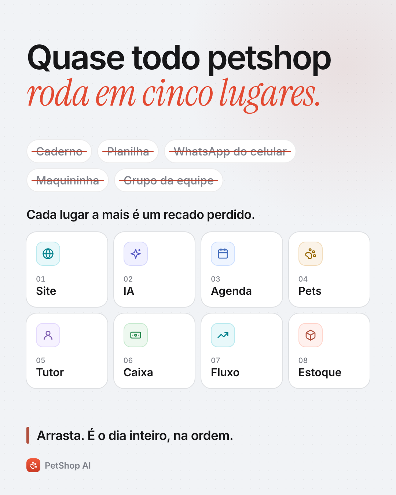
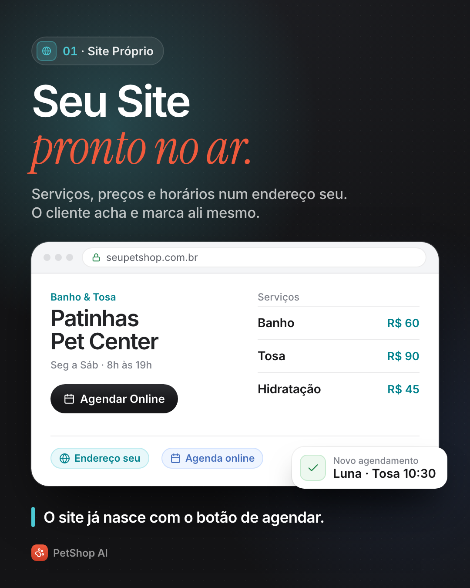
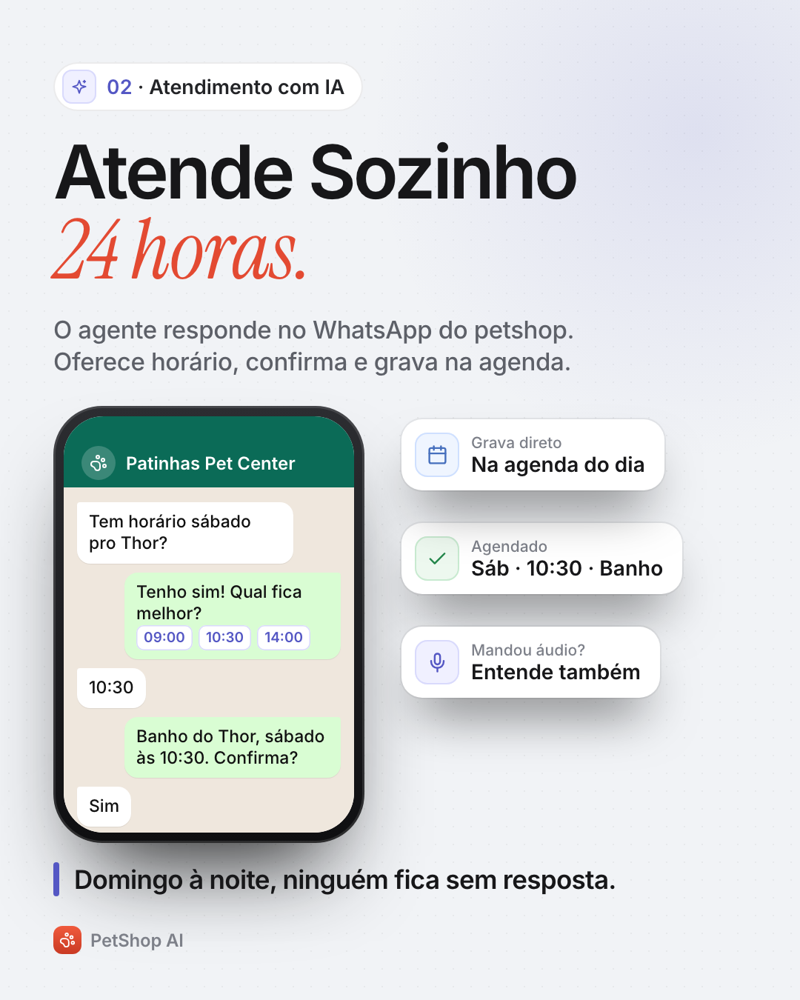
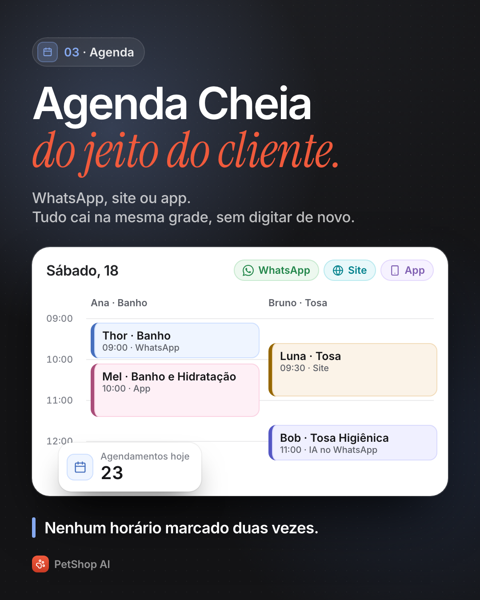
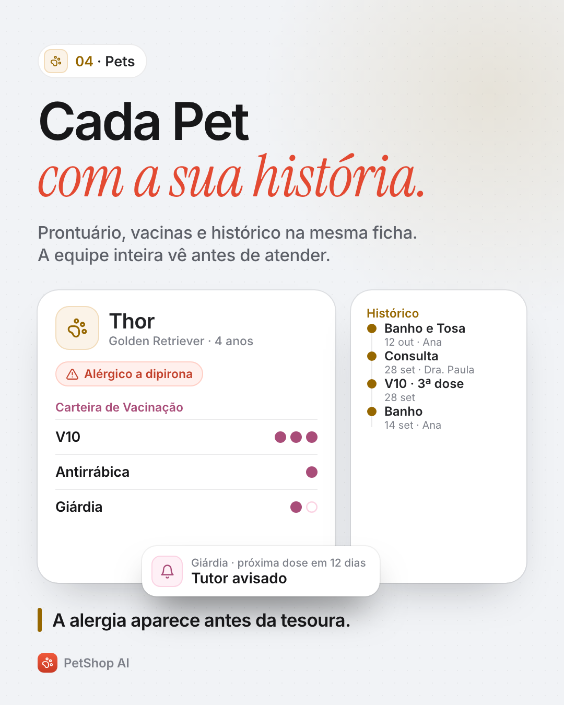
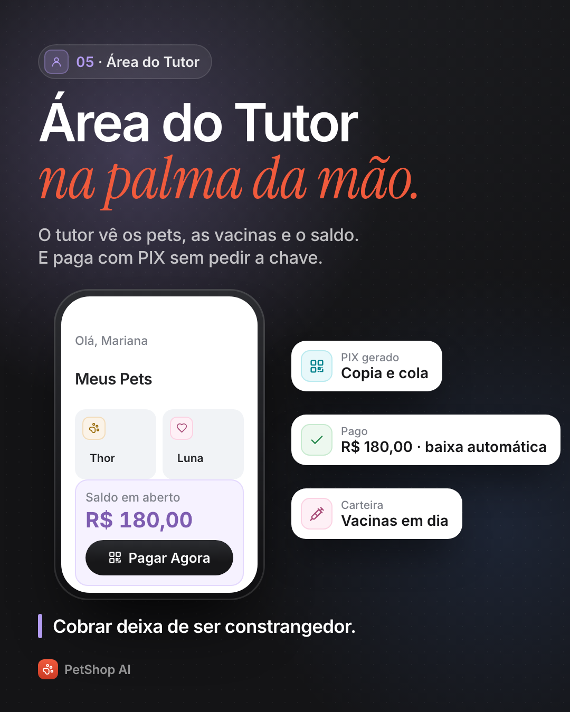
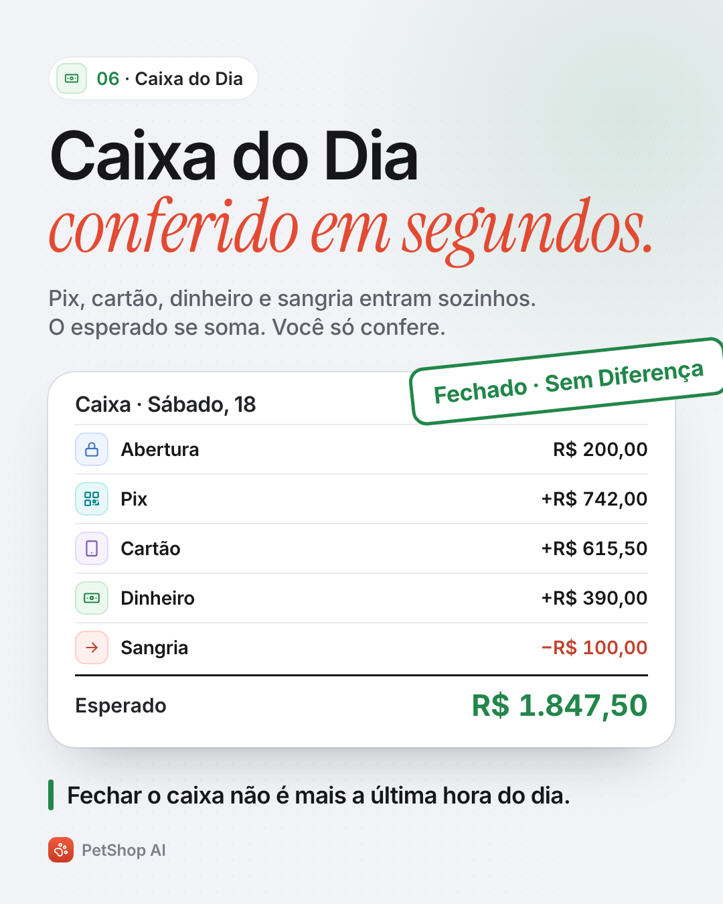
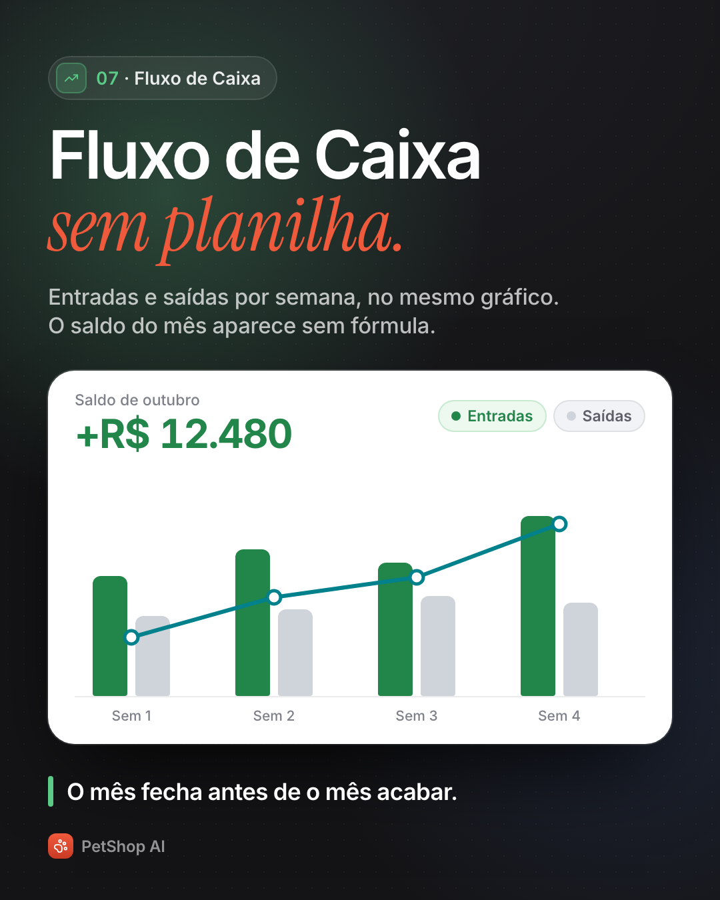
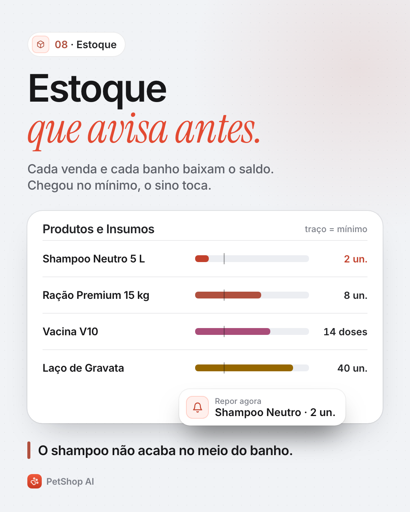
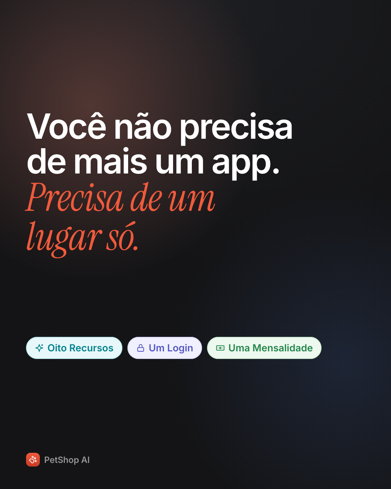
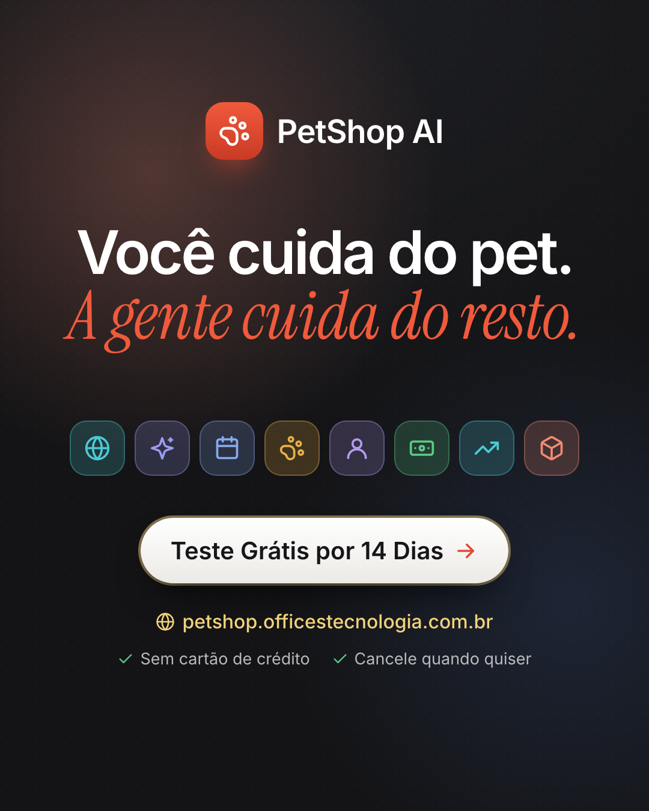
Um petshop não perde cliente por falta de carinho. Perde por recado perdido. Quase todo petshop roda em cinco lugares ao mesmo tempo: caderno, planilha, o WhatsApp do celular do dono, a maquininha e o grupo da equipe. Cada um sabe um pedaço. Nenhum sabe o dia inteiro. O PetShop AI junta os oito num lugar só: → Site próprio, pronto no ar, com botão de agendar. → Atendimento com IA no WhatsApp, 24 horas, que entende até áudio. → Agenda que recebe do WhatsApp, do site e do app. → Ficha do pet com prontuário, vacinas e o lembrete da próxima dose. → Área do tutor, onde ele vê o saldo e paga com PIX. → Caixa do dia que soma sozinho. → Fluxo de caixa sem planilha. → Estoque que avisa antes de acabar. A parte que ninguém conta: o agente não grava nada sem o "sim" do cliente. Ele propõe o horário, e só confirma quando a pessoa responde. Você cuida do pet. A gente cuida do resto. Teste grátis por 14 dias: link na bio.